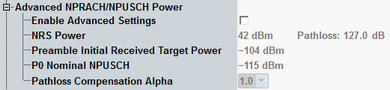

By default, the basic settings apply. Only the "Uplink Nominal Power" is configurable. The advanced settings are not configurable and the grayed-out values indicate the used basic settings.
If you enable the advanced settings, the grayed-out values become configurable. Instead, the "Uplink Nominal Power" parameter is disabled.

Enables configuration of the advanced parameters.
If disabled, the following parameters are grayed out and display the used basic settings.
Remote command:Specifies the parameter "nrs-Power", signaled to the UE as NPDSCH configuration parameter (see 3GPP TS 36.331, section 6.7.3.2).
The value is used by the UE to determine the pathloss, see 3GPP TS 36.213 section 16.2.1.1.
Remote command:Displays the pathloss resulting from the "NRS Power" and the "NRS EPRE".
Remote command:Specifies the parameter "preambleInitialReceivedTargetPower", signaled to the UE as common RACH parameter (see 3GPP TS 36.331, section 6.3.2).
In 3GPP TS 36.213, section 16.2.1.1 this parameter is called PO_PRE.
The value is used by the UE, for example, to calculate the power of the first preamble.
Remote command:Specifies the parameter "p0-NominalNPUSCH", signaled to the UE as uplink power control parameter (see 3GPP TS 36.331, section 6.7.3.2).
In 3GPP TS 36.213, section 16.2.1.1 this parameter is called PO_NOMINAL_NPUSCH,c.
Remote command:Specifies the parameter "alpha", signaled to the UE as uplink power control parameter (see 3GPP TS 36.331, section 6.7.3.2).
In 3GPP TS 36.213, section 16.2.1.1 this parameter is called αc.
Remote command: